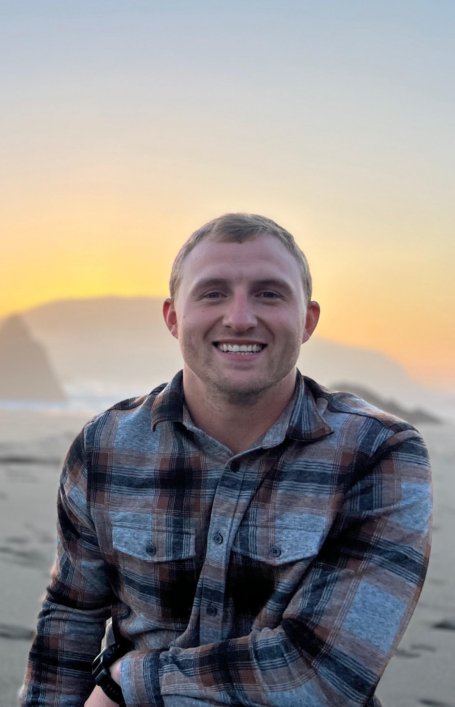

Kyle Rosenbrock
Football · LB · 2016–2020President
ATHLETIC CAREER
2020 RMAC Male Scholar-Athlete of the Year. CoSIDA Academic All-American. First-Team All-RMAC. Finished 3rd all-time at CSU Pueblo with 264 career tackles. 3.94 GPA in Mechatronic Engineering.
Senior Supervisor, High Temperature Composites at Collins Aerospace (RTX) in Pueblo, CO. Holds a BSE and MS in Engineering along with an MBA from CSU Pueblo. He and his wife have recently become parents with the birth of their son.

Scotland Coyle
Football · C/OL · 2011–2014Vice President
ATHLETIC CAREER
2014 All-American and National Champion. Anchored the offensive line on CSU Pueblo’s 2014 NCAA Division II Football National Championship team. First-Team RMAC All-Academic.
Owner of Integrity Worx Handyman LLC. Colorado native with over a decade of experience in construction and home services. Known for his integrity, craftsmanship, and community focus, he is committed to supporting the mission of Pack Forever Foundation.
Austin Micci
Football · RB · 2016–2019Treasurer
ATHLETIC CAREER
2x CoSIDA Academic All-American. 2019 RMAC Academic Offensive Player of the Year. Finished among CSU Pueblo’s top all-time performers.
Vice President of Western Group, Inc. who creates compreshensive insurance solutions for businesses throughout the state of Colorado.
Drew Swartz
Football · OG · 2009–2013Secretary
ATHLETIC CAREER
2013 All-American offensive guard. Part of an offensive line that ranked 6th nationally in total offense. Key contributor on back-to-back RMAC championship teams in 2012 and 2013.
Technology Analyst at State Farm. Holds an MBA and CPCU designation. BS in Management and MBA in Marketing from CSU Pueblo.

Joe Rosenbrock
Football · LB · 2012–2015Board Member
ATHLETIC CAREER
Led the team in tackles (107) during the 2014 National Championship season. Academic All-RMAC First Team. Received the RMAC Summit Award for highest GPA on a Championship team.
Math Teacher and Head Football Coach at Brush High School in Brush, Colorado. Named CSU Pueblo Alumni Teacher of the Year (High School) in 2020. Now in his fourth season leading the Beetdiggers, he has the program trending upward and ranked in Colorado 2A football.